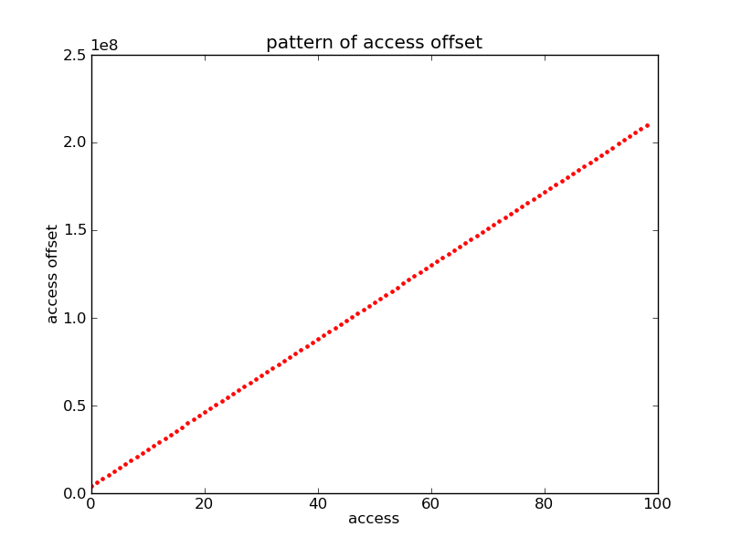
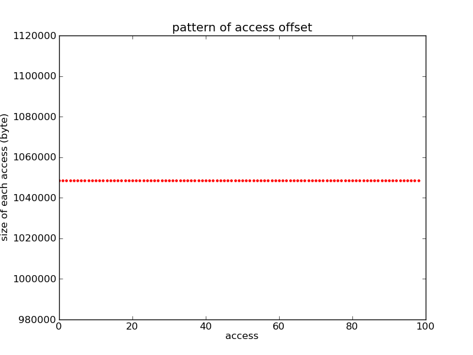

Trace file: trace_samples/trace_1d_demo.
Trace Signature:Type: TWOD_STRIDED Start(number of accesses): 0 End(# of accesses): 97 Trace signatures: {MPI_READ, 4194304, 1, ([{4194304, 1, (2097152, 1)}, 1048576, 1]), 98}.
 